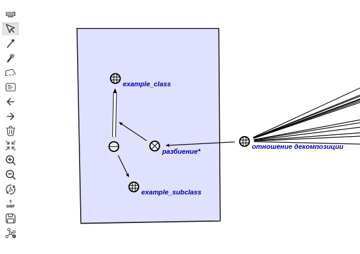
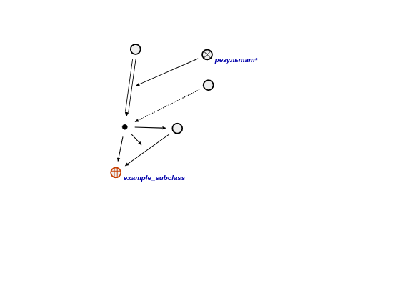

Команда поиска подклассов заданного класса, входящих в указанную структуру предназначена для нахождения подклассов заданного класса, входящих в указанную структуру . Первым аргументом команды является класс сущностей, подклассы которого необходимо найти. Вторым аргументом запроса является структура . Результатом выполнения команды является множество, состоящее из подклассов заданного класса сущностей, входящих в указанную структуру . Например, для конкретного класса сущностей - example_class - и конкретной структуры - example_structure - будет получен следующий результат:

